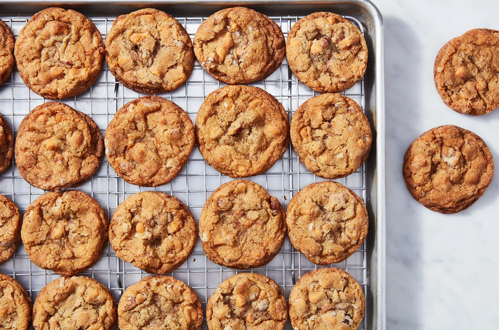

Salty-Sweet Butter Pecan Cookies
Home

Salt and sugar go together like coffee and cream
Each brings the other to new heights. These butterscotch cookies are heavily laced with toasted pecans and butterscotch chips. Love salty/sweet? They're rolled in a mixture of sugar and salt before baking, which gives them over-the-top flavor.
Ingredients
Dough
- 1 1/3 cups (142g) pecan halves
- 2/3 cup (142g) light brown sugar, packed
2 teaspoons King Arthur Pure Vanilla Extract
- 2/3 cup (131g) granulated sugar
- 8 tablespoons (113g) unsalted butter
- 1/2 cup (92g) vegetable shortening
- 1/2 teaspoon table salt
- 1/2 teaspoon espresso powder
- 1 teaspoon baking soda
- 2 teaspoons vanilla extract
- 3/4 teaspoon butterscotch flavor, vanilla-butternut flavor, or butter-rum flavor, optional
- 1 teaspoon cider vinegar or white vinegar
- 1 large egg
- 2 cups (240g) unbleached all-purpose flour
- 1 1/3 cups (227g) butterscotch chips
Topping
- 1/3 cup (67g) granulated sugar
- 1 to 1 1/4 teaspoons table salt, to taste
Steps
- Preheat the oven to 375°F. Lightly grease (or line with parchment) two baking sheets.
- Place the pecans in a single layer in a pan, and toast until they've darkened a bit and smell toasty, about 8 to 9 minutes. Set them aside to cool, then chop coarsely.
- In a large bowl or the bowl of a stand mixer, combine the sugars, butter, shortening, salt, espresso powder, baking soda, vanilla, flavor, and vinegar, beating until smooth and creamy.
- Beat in the egg, again beating until smooth. Scrape the bottom and sides of the bowl with a spatula to make sure everything is thoroughly combined.
- Mix in the flour, then the chips and toasted nuts.
- If you're going to refrigerate the dough, cover the bowl, and chill for about 4 to 5 hours; or overnight. How long you chill the dough will affect how much the cookies spread; see "tips," below for details.
- Mix the 1/3 cup (67g) sugar and salt for the coating, and put it in a bowl. Use a spoon (or a tablespoon cookie scoop) to scoop 1 1/2" balls of dough into the sugar/salt mixture, rolling to coat. Then transfer to the prepared baking sheets, leaving 2" between them on all sides; they'll spread quite a bit. Or use a teaspoon cookie scoop to scoop 1 1/4" balls of dough.
- Bake the cookies for 10 to 12 minutes — 10 minutes for smaller cookies made from unrefrigerated dough, 12 for larger cookies whose dough has been refrigerated (and something in between for other iterations of size and refrigeration). Their edges will be chestnut brown and their tops a lighter golden brown. Remove them from the oven, and cool on the pan until they've set enough to move without breaking. Repeat with the remaining dough.
- Store cookies, well wrapped, at room temperature for up to 5 days; freeze for longer storage.